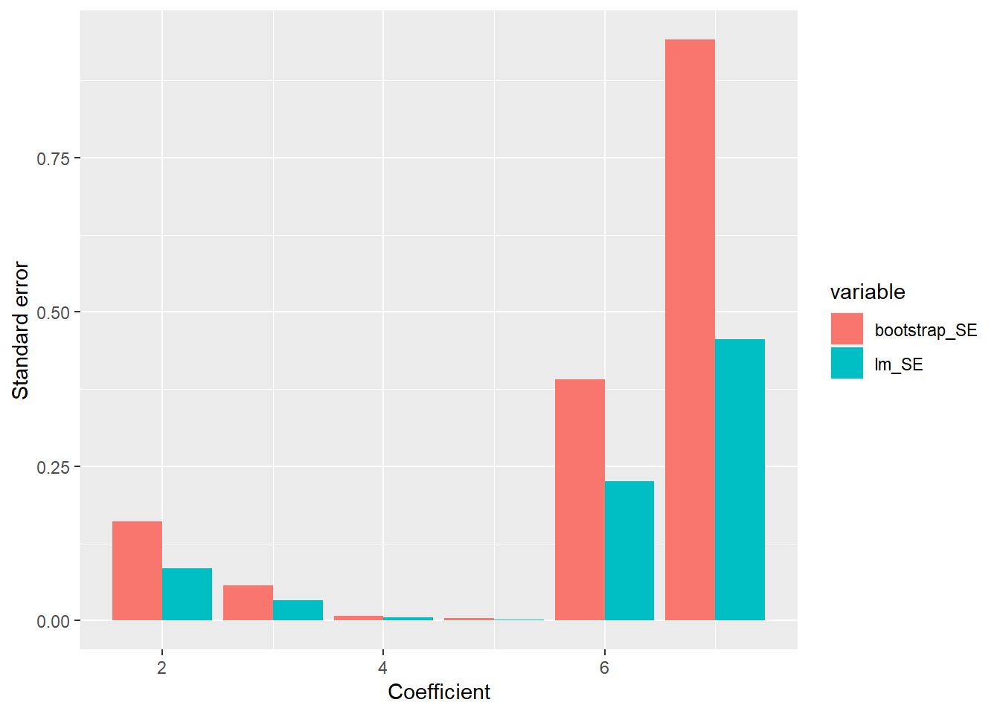
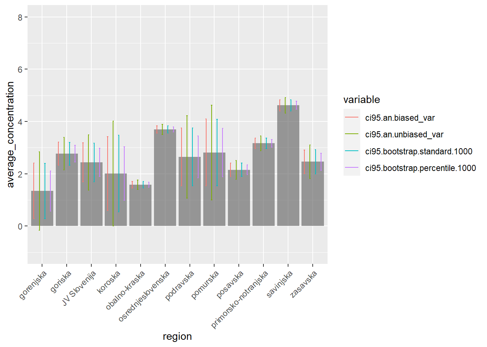

Chapter 14 Bootstrap
This chapter deals with bootstrap.
The students are expected to acquire the following knowledge:
- How to use bootstrap to generate coverage intervals.
Exercise 14.1 Ideally, a \(1-\alpha\) CI would have \(1-\alpha\) coverage. That is, say a 95% CI should, in the long run, contain the true value of the parameter 95% of the time. In practice, it is impossible to assess the coverage of our CI method, because we rarely know the true parameter. In simulation, however, we can. Let’s assess the coverage of bootstrap percentile intervals.
Pick a univariate distribution with readily available mean and one that you can easily sample from.
Draw \(n = 30\) random samples from the chosen distribution and use the bootstrap (with large enough m) and percentile CI method to construct 95% CI. Repeat the process many times and count how many times the CI contains the true mean. That is, compute the actual coverage probability (don’t forget to include the standard error of the coverage probability!). What can you observe?
Try one or two different distributions. What can you observe?
Repeat (b) and (c) using BCa intervals (R package boot). How does the coverage compare to percentile intervals?
As (d) but using intervals based on asymptotic normality (+/- 1.96 SE).
How do results from (b), (d), and (e) change if we increase the sample size to n = 200? What about n = 5?
library(boot)
set.seed(0)
nit <- 1000 # Repeat the process "many times"
alpha <- 0.05 # CI parameter
nboot <- 100 # m parameter for bootstrap ("large enough m")
# f: change this to 200 or 5.
nsample <- 30 # n = 30 random samples from the chosen distribution. Comment out BCa code if it breaks.
covers <- matrix(nrow = nit, ncol = 3)
covers_BCa <- matrix(nrow = nit, ncol = 3)
covers_asymp_norm <- matrix(nrow = nit, ncol = 3)
isin <- function (x, lower, upper) {
(x > lower) & (x < upper)
}
for (j in 1:nit) { # Repeating many times
# a: pick a univariate distribution - standard normal
x1 <- rnorm(nsample)
# c: one or two different distributions - beta and poisson
x2 <- rbeta(nsample, 1, 2)
x3 <- rpois(nsample, 5)
X1 <- matrix(data = NA, nrow = nsample, ncol = nboot)
X2 <- matrix(data = NA, nrow = nsample, ncol = nboot)
X3 <- matrix(data = NA, nrow = nsample, ncol = nboot)
for (i in 1:nboot) {
X1[ ,i] <- sample(x1, nsample, replace = T)
X2[ ,i] <- sample(x2, nsample, T)
X3[ ,i] <- sample(x3, nsample, T)
}
X1_func <- apply(X1, 2, mean)
X2_func <- apply(X2, 2, mean)
X3_func <- apply(X3, 2, mean)
X1_quant <- quantile(X1_func, probs = c(alpha / 2, 1 - alpha / 2))
X2_quant <- quantile(X2_func, probs = c(alpha / 2, 1 - alpha / 2))
X3_quant <- quantile(X3_func, probs = c(alpha / 2, 1 - alpha / 2))
covers[j,1] <- (0 > X1_quant[1]) & (0 < X1_quant[2])
covers[j,2] <- ((1 / 3) > X2_quant[1]) & ((1 / 3) < X2_quant[2])
covers[j,3] <- (5 > X3_quant[1]) & (5 < X3_quant[2])
mf <- function (x, i) return(mean(x[i]))
bootX1 <- boot(x1, statistic = mf, R = nboot)
bootX2 <- boot(x2, statistic = mf, R = nboot)
bootX3 <- boot(x3, statistic = mf, R = nboot)
X1_quant_BCa <- boot.ci(bootX1, type = "bca")$bca
X2_quant_BCa <- boot.ci(bootX2, type = "bca")$bca
X3_quant_BCa <- boot.ci(bootX3, type = "bca")$bca
covers_BCa[j,1] <- (0 > X1_quant_BCa[4]) & (0 < X1_quant_BCa[5])
covers_BCa[j,2] <- ((1 / 3) > X2_quant_BCa[4]) & ((1 / 3) < X2_quant_BCa[5])
covers_BCa[j,3] <- (5 > X3_quant_BCa[4]) & (5 < X3_quant_BCa[5])
# e: estimate mean and standard error
# sample mean:
x1_bar <- mean(x1)
x2_bar <- mean(x2)
x3_bar <- mean(x3)
# standard error (of the sample mean) estimate: sample standard deviation / sqrt(n)
x1_bar_SE <- sd(x1) / sqrt(nsample)
x2_bar_SE <- sd(x2) / sqrt(nsample)
x3_bar_SE <- sd(x3) / sqrt(nsample)
covers_asymp_norm[j,1] <- isin(0, x1_bar - 1.96 * x1_bar_SE, x1_bar + 1.96 * x1_bar_SE)
covers_asymp_norm[j,2] <- isin(1/3, x2_bar - 1.96 * x2_bar_SE, x2_bar + 1.96 * x2_bar_SE)
covers_asymp_norm[j,3] <- isin(5, x3_bar - 1.96 * x3_bar_SE, x3_bar + 1.96 * x3_bar_SE)
}
apply(covers, 2, mean)## [1] 0.918 0.925 0.905apply(covers, 2, sd) / sqrt(nit)## [1] 0.008680516 0.008333333 0.009276910apply(covers_BCa, 2, mean)## [1] 0.927 0.944 0.927apply(covers_BCa, 2, sd) / sqrt(nit)## [1] 0.008230355 0.007274401 0.008230355apply(covers_asymp_norm, 2, mean)## [1] 0.939 0.937 0.930apply(covers_asymp_norm, 2, sd) / sqrt(nit)## [1] 0.007572076 0.007687008 0.008072494Exercise 14.2 You are given a sample of independent observations from a process of interest:
| Index | 1 | 2 | 3 | 4 | 5 | 6 | 7 | 8 |
|---|---|---|---|---|---|---|---|---|
| X | 7 | 2 | 4 | 6 | 4 | 5 | 9 | 10 |
Compute the plug-in estimate of mean and 95% symmetric CI based on asymptotic normality. Use the plug-in estimate of SE.
Same as (a), but use the unbiased estimate of SE.
Apply nonparametric bootstrap with 1000 bootstrap replications and estimate the 95% CI for the mean with percentile-based CI.
# a
x <- c(7, 2, 4, 6, 4, 5, 9, 10)
n <- length(x)
mu <- mean(x)
SE <- sqrt(mean((x - mu)^2)) / sqrt(n)
SE## [1] 0.8915839z <- qnorm(1 - 0.05 / 2)
c(mu - z * SE, mu + z * SE)## [1] 4.127528 7.622472# b
SE <- sd(x) / sqrt(n)
SE## [1] 0.9531433c(mu - z * SE, mu + z * SE)## [1] 4.006873 7.743127# c
set.seed(0)
m <- 1000
T_mean <- function(x) {mean(x)}
est_boot <- array(NA, m)
for (i in 1:m) {
x_boot <- x[sample(1:n, n, rep = T)]
est_boot[i] <- T_mean(x_boot)
}
quantile(est_boot, p = c(0.025, 0.975))## 2.5% 97.5%
## 4.250 7.625Exercise 14.3 We are given a sample of 10 independent paired (bivariate) observations:
| Index | 1 | 2 | 3 | 4 | 5 | 6 | 7 | 8 | 9 | 10 |
|---|---|---|---|---|---|---|---|---|---|---|
| X | 1.26 | -0.33 | 1.33 | 1.27 | 0.41 | -1.54 | -0.93 | -0.29 | -0.01 | 2.40 |
| Y | 2.64 | 0.33 | 0.48 | 0.06 | -0.88 | -2.14 | -2.21 | 0.95 | 0.83 | 1.45 |
Compute Pearson correlation between X and Y.
Use the cor.test() from R to estimate a 95% CI for the estimate from (a).
Apply nonparametric bootstrap with 1000 bootstrap replications and estimate the 95% CI for the Pearson correlation with percentile-based CI.
Compare CI from (b) and (c). Are they similar?
How would the bootstrap estimation of CI change if we were interested in Spearman or Kendall correlation instead?
x <- c(1.26, -0.33, 1.33, 1.27, 0.41, -1.54, -0.93, -0.29, -0.01, 2.40)
y <- c(2.64, 0.33, 0.48, 0.06, -0.88, -2.14, -2.21, 0.95, 0.83, 1.45)
# a
cor(x, y)## [1] 0.6991247# b
res <- cor.test(x, y)
res$conf.int[1:2]## [1] 0.1241458 0.9226238# c
set.seed(0)
m <- 1000
n <- length(x)
T_cor <- function(x, y) {cor(x, y)}
est_boot <- array(NA, m)
for (i in 1:m) {
idx <- sample(1:n, n, rep = T) # !!! important to use same indices to keep dependency between x and y
est_boot[i] <- T_cor(x[idx], y[idx])
}
quantile(est_boot, p = c(0.025, 0.975))## 2.5% 97.5%
## 0.2565537 0.9057664# d
# Yes, but the bootstrap CI is more narrow.
# e
# We just use the functions for Kendall/Spearman coefficients instead:
T_kendall <- function(x, y) {cor(x, y, method = "kendall")}
T_spearman <- function(x, y) {cor(x, y, method = "spearman")}
# Put this in a function that returns the CI
bootstrap_95_ci <- function(x, y, t, m = 1000) {
n <- length(x)
est_boot <- array(NA, m)
for (i in 1:m) {
idx <- sample(1:n, n, rep = T) # !!! important to use same indices to keep dependency between x and y
est_boot[i] <- t(x[idx], y[idx])
}
quantile(est_boot, p = c(0.025, 0.975))
}
bootstrap_95_ci(x, y, T_kendall)## 2.5% 97.5%
## -0.08108108 0.78378378bootstrap_95_ci(x, y, T_spearman)## 2.5% 97.5%
## -0.1701115 0.8867925Exercise 14.4 In this problem we will illustrate the use of the nonparametric bootstrap for estimating CIs of regression model coefficients.
Load the longley dataset from base R with data(longley).
Use lm() to apply linear regression using “Employed” as the target (dependent) variable and all other variables as the predictors (independent). Using lm() results, print the estimated regression coefficients and standard errors. Estimate 95% CI for the coefficients using +/- 1.96 * SE.
Use nonparametric bootstrap with 100 replications to estimate the SE of the coefficients from (b). Compare the SE from (c) with those from (b).
# a
data(longley)
# b
res <- lm(Employed ~ . , longley)
tmp <- data.frame(summary(res)$coefficients[,1:2])
tmp$LB <- tmp[,1] - 1.96 * tmp[,2]
tmp$UB <- tmp[,1] + 1.96 * tmp[,2]
tmp## Estimate Std..Error LB UB
## (Intercept) -3.482259e+03 8.904204e+02 -5.227483e+03 -1.737035e+03
## GNP.deflator 1.506187e-02 8.491493e-02 -1.513714e-01 1.814951e-01
## GNP -3.581918e-02 3.349101e-02 -1.014616e-01 2.982320e-02
## Unemployed -2.020230e-02 4.883997e-03 -2.977493e-02 -1.062966e-02
## Armed.Forces -1.033227e-02 2.142742e-03 -1.453204e-02 -6.132495e-03
## Population -5.110411e-02 2.260732e-01 -4.942076e-01 3.919994e-01
## Year 1.829151e+00 4.554785e-01 9.364136e-01 2.721889e+00# c
set.seed(0)
m <- 100
n <- nrow(longley)
T_coef <- function(x) {
lm(Employed ~ . , x)$coefficients
}
est_boot <- array(NA, c(m, ncol(longley)))
for (i in 1:m) {
idx <- sample(1:n, n, rep = T)
est_boot[i,] <- T_coef(longley[idx,])
}
SE <- apply(est_boot, 2, sd)
SE## [1] 1.826011e+03 1.605981e-01 5.693746e-02 8.204892e-03 3.802225e-03
## [6] 3.907527e-01 9.414436e-01# Show the standard errors around coefficients
library(ggplot2)
library(reshape2)
df <- data.frame(index = 1:7, bootstrap_SE = SE, lm_SE = tmp$Std..Error)
melted_df <- melt(df[2:nrow(df), ], id.vars = "index") # Ignore bias which has a really large magnitude
ggplot(melted_df, aes(x = index, y = value, fill = variable)) +
geom_bar(stat="identity", position="dodge") +
xlab("Coefficient") +
ylab("Standard error") # + scale_y_continuous(trans = "log") # If you want to also plot bias
Exercise 14.5 This exercise shows a shortcoming of the bootstrap method when using the plug in estimator for the maximum.
Compute the 95% bootstrap CI for the maximum of a standard normal distribution.
Compute the 95% bootstrap CI for the maximum of a binomial distribution with n = 15 and p = 0.2.
Repeat (b) using p = 0.9. Why is the result different?
# bootstrap CI for maximum
alpha <- 0.05
T_max <- function(x) {max(x)} # Equal to T_max = max
bootstrap <- function(x, t, m = 1000) {
n <- length(x)
values <- rep(0, m)
for (i in 1:m) {
values[i] <- t(sample(x, n, replace = T))
}
quantile(values, probs = c(alpha / 2, 1 - alpha / 2))
}
# a
# Meaningless, as the normal distribution can yield arbitrarily large values.
x <- rnorm(100)
bootstrap(x, T_max)## 2.5% 97.5%
## 1.819425 2.961743# b
x <- rbinom(100, size = 15, prob = 0.2) # min = 0, max = 15
bootstrap(x, T_max)## 2.5% 97.5%
## 6 7# c
x <- rbinom(100, size = 15, prob = 0.9) # min = 0, max = 15
bootstrap(x, T_max)## 2.5% 97.5%
## 15 15# Observation: to estimate the maximum, we need sufficient probability mass near the maximum value the distribution can yield.
# Using bootstrap is pointless when there is too little mass near the true maximum.
# In general, bootstrap will fail when estimating the CI for the maximum.Exercise 14.6 (Practical - and fictional - coverage interval comparison) In this exercise, we investigate how different kinds of CI’s behave as we vary the number of measurements.
The story behind the data: it’s 2025 and we’ve discovered that Slovenia has rich deposits of a rare mineral called Moustachium, which can be used to accelerate moustache growth. This mineral is highly sought, so the government has decided to contract two different companies to provide information on where to begin mining. Both companies investigated mining sites in each statistical region and gave their best estimate of the average Moustachium concentration in tonnes per square kilometer. The Data Science team has been called to estimate the uncertainty in these estimates and help avoid mining in the wrong region.
Generate synthetic data with the script below:
set.seed(0)
library(comprehenr)
regions <- c("pomurska", "podravska", "koroska", "savinjska", "zasavska", "posavska", "JV Slovenija", "primorsko-notranjska", "osrednjeslovenska", "gorenjska", "goriska", "obalno-kraska")
region_rates <- seq(1.3, 2.3, length.out=length(regions))
region_rates <- region_rates[sample.int(length(regions), length(regions))]
make_dataset <- function(n_contractors) {
measurements <- matrix(nrow=length(regions), ncol=n_contractors)
for (i in 1:length(regions)) {
measurements[i,] <- rgamma(n_contractors, 5.0, region_rates[i])
}
df <- data.frame(measurements)
row.names(df) <- regions
names(df) <- to_vec(for(i in 1:n_contractors) paste("Contractor", i))
return(df)
}
set.seed(0)
df_2025 <- make_dataset(2)
set.seed(0)
df_2027 <- make_dataset(10)
set.seed(0)
df_2028 <- make_dataset(100)
set.seed(0)
df_2029 <- make_dataset(1000)
saveRDS(df_2025, file="moustachium_2025.Rda")
saveRDS(df_2027, file="moustachium_2027.Rda")
saveRDS(df_2028, file="moustachium_2028.Rda")
saveRDS(df_2029, file="moustachium_2029.Rda")Estimate the average concentration for different regions.
Estimate the average concentration uncertainty using 95% CI’s (asymptotic normality with biased and unbiased standard error, standard bootstrap CI, bootstrap percentile CI).
Visualize uncertainties with a histogram and discuss the best location to start mining.
The year is 2027 and the government has decided to contract 10 companies. Rerun the code with new measurements and discuss how CI’s change.
Technological advancements in robotics have enabled site surveys on a massive scale. Repeat the last point for 100 surveyor robots in 2028 and 1000 surveyor robots in 2029.
library(ggplot2)
library(dplyr)
library(data.table)
set.seed(0)
input_dataset_path = "moustachium_2025.Rda" # Change this for points d and e
output_plot_path = "moustachium_2025.pdf" # Change this for points d and e
df <- readRDS(input_dataset_path) # Data comes from here
n_contractors <- ncol(df)
results_df <- data.frame(region=row.names(df)) # Store CI bounds here
# 1. average concentration for different mining sites
results_df$average_concetration <- rowMeans(df)
# CI for the mean based on asymptotic normality (biased SE estimate)
biased_SE <- sqrt(apply(df, 1, function(vec) {sum((vec - mean(vec))^2) / length(vec)}) / n_contractors)
results_df$ci95.an.biased_var.low <- results_df$average_concetration - 1.96 * biased_SE
results_df$ci95.an.biased_var.high <- results_df$average_concetration + 1.96 * biased_SE
# CI for the mean based on asymptotic normality (unbiased SE estimate)
unbiased_SE <- sqrt(apply(df, 1, var) / n_contractors)
results_df$ci95.an.unbiased_var.low <- results_df$average_concetration - 1.96 * unbiased_SE
results_df$ci95.an.unbiased_var.high <- results_df$average_concetration + 1.96 * unbiased_SE
# Standard bootstrap CI with 1000 samples
bootstrap_variance <- function(data, n_samples) {
# n_samples is m in pseudocode
output <- numeric(n_samples)
for (i in 1:n_samples) {
index <- sample(1:length(data), length(data), rep = TRUE)
resampled_data <- data[index]
output[i] <- mean(resampled_data)
}
return(var(output))
}
bootstrap_1000_sd <- sqrt(apply(df, 1, function(vec){bootstrap_variance(vec, 1000)}))
results_df$ci95.bootstrap.standard.1000.low <- results_df$average_concetration - 1.96 * bootstrap_1000_sd
results_df$ci95.bootstrap.standard.1000.high <- results_df$average_concetration + 1.96 * bootstrap_1000_sd
# Bootstrap percentile CI with 1000 samples
bootstrap_quantile <- function(data, functional, n_samples, probs) {
# n_samples is m in pseudocode
output <- numeric(n_samples)
for (i in 1:n_samples) {
index <- sample(1:length(data), length(data), rep = TRUE)
resampled_data <- data[index]
output[i] <- functional(resampled_data)
}
return(quantile(output, probs=probs))
}
results_df$ci95.bootstrap.percentile.1000.low <- apply(df, 1, function(vec){bootstrap_quantile(vec, mean, 1000, 0.025)})
results_df$ci95.bootstrap.percentile.1000.high <- apply(df, 1, function(vec){bootstrap_quantile(vec, mean, 1000, 0.975)})
results_df## region average_concetration ci95.an.biased_var.low
## 1 pomurska 2.814731 1.5351811
## 2 podravska 2.646518 1.5358919
## 3 koroska 2.010216 0.5956186
## 4 savinjska 4.618001 4.4057369
## 5 zasavska 2.458873 2.0050840
## 6 posavska 2.153802 1.9001244
## 7 JV Slovenija 2.433503 1.6860397
## 8 primorsko-notranjska 3.165394 2.9640430
## 9 osrednjeslovenska 3.696875 3.5592419
## 10 gorenjska 1.341931 0.2784547
## 11 goriska 2.767328 2.3255569
## 12 obalno-kraska 1.580711 1.4533751
## ci95.an.biased_var.high ci95.an.unbiased_var.low ci95.an.unbiased_var.high
## 1 4.094281 1.005174095 4.624288
## 2 3.757144 1.075855548 4.217180
## 3 3.424813 0.009673183 4.010759
## 4 4.830264 4.317814385 4.918187
## 5 2.912662 1.817118318 3.100628
## 6 2.407479 1.795047746 2.512556
## 7 3.180965 1.376430415 3.490575
## 8 3.366746 2.880640556 3.450148
## 9 3.834508 3.502232367 3.891518
## 10 2.405407 -0.162051549 2.845913
## 11 3.209099 2.142569481 3.392086
## 12 1.708047 1.400630772 1.760792
## ci95.bootstrap.standard.1000.low ci95.bootstrap.standard.1000.high
## 1 1.5397542 4.089708
## 2 1.5388631 3.754173
## 3 0.5492603 3.471171
## 4 4.4062860 4.829715
## 5 1.9938049 2.923942
## 6 1.9010514 2.406552
## 7 1.6932573 3.173748
## 8 2.9670216 3.363767
## 9 3.5602064 3.833544
## 10 0.2845999 2.399262
## 11 2.3293359 3.205320
## 12 1.4543352 1.707087
## ci95.bootstrap.percentile.1000.low ci95.bootstrap.percentile.1000.high
## 1 1.8914878 3.737975
## 2 1.8451596 3.447876
## 3 0.9895308 3.030901
## 4 4.4648444 4.771157
## 5 2.1314473 2.786299
## 6 1.9707640 2.336840
## 7 1.8941800 2.972825
## 8 3.0201118 3.310677
## 9 3.5975676 3.796183
## 10 0.5745928 2.109269
## 11 2.4485735 3.086082
## 12 1.4888334 1.672589# Visualization: we use a bar chart with uncertainty bands
plot_moustachium_per_region <- function(region_names, average, ci_low, ci_high) {
df_visualization <- data.frame(region=region_names, average=average, low=ci_low, high=ci_high)
ggplot(df_visualization, aes(x=region, y=average)) + geom_bar(stat="identity")
}
mask <- endsWith(colnames(results_df), "low")
mask[c(1, 2)] <- T
results_df_low <- results_df[, mask]
colnames(results_df_low) <- gsub('.low','', colnames(results_df_low))
mask <- endsWith(colnames(results_df), "high")
mask[c(1, 2)] <- T
results_df_high <- results_df[, mask]
colnames(results_df_high) <- gsub('.high','', colnames(results_df_high))
long_results_df_low <- melt(setDT(results_df_low), id.vars=c("region", "average_concetration"))
names(long_results_df_low) <- c("region", "average_concentration", "variable", "low")
long_results_df_high <- melt(setDT(results_df_high), id.vars=c("region", "average_concetration"))
names(long_results_df_high) <- c("region", "average_concentration", "variable", "high")
long_results_df <- merge(long_results_df_low, long_results_df_high, by=c("region", "variable", "average_concentration"), all=T)
moustachium_plot <- ggplot(long_results_df, aes(x=region, y=average_concentration)) +
geom_bar(stat="identity", position="dodge", alpha=0.2) +
geom_errorbar(aes(ymin=low, ymax=high, color=variable), width=0.2, position=position_dodge(0.9)) +
scale_x_discrete(guide = guide_axis(angle = 45)) +
ylim(-1, 8)
# ggsave(plot=moustachium_plot, width=12, height=8, dpi=300, filename=output_plot_path)
moustachium_plot
# Visualization: we can also use a map. Circle size denotes concentration in region, low transparency denotes high uncertainty.
library(maps)
map_data_slo <- map_data('world')[map_data('world')$region == "Slovenia",]
map_df <- long_results_df[long_results_df$variable == "ci95.an.biased_var", ]
# VERY approximate longitudes and latitudes for different regions.
map_df$long <- rep(0, nrow(map_df))
map_df$lat <- rep(0, nrow(map_df))
map_df[map_df$region == "gorenjska"]$long <- 14.2
map_df[map_df$region == "gorenjska"]$lat <- 46.3
map_df[map_df$region == "goriska"]$long <- 13.85
map_df[map_df$region == "goriska"]$lat <- 46.0
map_df[map_df$region == "obalno-kraska"]$long <- 13.9
map_df[map_df$region == "obalno-kraska"]$lat <- 45.65
map_df[map_df$region == "osrednjeslovenska"]$long <- 14.5
map_df[map_df$region == "osrednjeslovenska"]$lat <- 46.
map_df[map_df$region == "primorsko-notranjska"]$long <- 14.3
map_df[map_df$region == "primorsko-notranjska"]$lat <- 45.7
map_df[map_df$region == "zasavska"]$long <- 15
map_df[map_df$region == "zasavska"]$lat <- 46.1
map_df[map_df$region == "savinjska"]$long <- 15.2
map_df[map_df$region == "savinjska"]$lat <- 46.25
map_df[map_df$region == "posavska"]$long <- 15.4
map_df[map_df$region == "posavska"]$lat <- 46
map_df[map_df$region == "koroska"]$long <- 15.1
map_df[map_df$region == "koroska"]$lat <- 46.5
map_df[map_df$region == "podravska"]$long <- 15.7
map_df[map_df$region == "podravska"]$lat <- 46.45
map_df[map_df$region == "pomurska"]$long <- 16.2
map_df[map_df$region == "pomurska"]$lat <- 46.65
map_df[map_df$region == "JV Slovenija"]$long <- 15.
map_df[map_df$region == "JV Slovenija"]$lat <- 45.7
map_df$ci_size <- (map_df$high - map_df$low)
map_df$ci_y <- map_df$lat - 0.05
map_df$ci_label <- sprintf("(%.2f, %.2f)", map_df$low, map_df$high)
map_df$avg_label <- sprintf("%.2f", map_df$average_concentration)
country_plot <- ggplot() +
# First layer: worldwide map
geom_polygon(data = map_data("world"),
aes(x=long, y=lat, group = group),
color = '#9c9c9c', fill = '#f3f3f3') +
# Second layer: Country map
geom_polygon(
data = map_data_slo,
aes(x=long, y=lat, group = group),
color='darkgreen',
fill='green',
alpha=0.2
) +
geom_point(data=map_df, aes(x=long, y=lat, fill=region, size=average_concentration, alpha=ci_size), color="black", pch=21) +
geom_text(data=map_df, aes(x=long, y=ci_y, label=ci_label), size=3) +
geom_text(data=map_df, aes(x=long, y=lat, label=avg_label), size=3) +
scale_size_continuous(range = c(3, 12), trans = "exp") +
scale_alpha_continuous(range = c(0.15, 0.75), trans = "reverse") +
ggtitle("Estimated average Moustachium concentration with 95% CI") +
coord_cartesian(xlim=c(13.2, 16.7), ylim=c(45.4, 47.))
# ggsave(plot=country_plot, width=18, height=12, dpi=300, filename="country.pdf")
country_plot